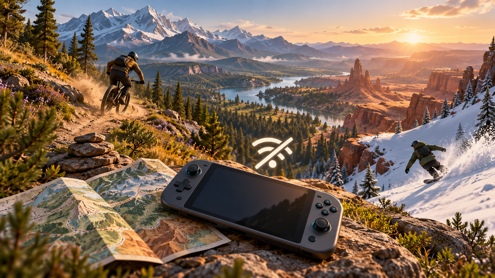

news · Preservation
Riders Republic Gets Offline Mode December 9
Riders Republic will add an offline single-player mode to every platform on December 9, the same day Ubisoft launches the game on Switch 2.

What happened
Ubisoft announced on October 20 that Riders Republic will launch for Nintendo Switch 2 on December 9. On the same day, a free update will add Offline Play to the game's existing versions and the new Switch 2 release. Ubisoft calls the feature Nomad mode; independent reports from Gematsu and Nintendo Life confirmed both the platform release and date.
Nomad mode will allow solo players to explore the open world, progress through careers, unlock landmarks and beauty spots, find collectible balloons and customize their character without an internet connection. Ubisoft says progress made offline will be reconciled with the player's online save after reconnecting. The company linked the work to the Switch 2 port and the game's new Steam Deck certification.
What stays online
Offline Play does not convert the whole live service into a local game. Ubisoft says the shop, seasonal progression, sponsors, multiplayer modes and user-created events will continue to require an internet connection. The announcement also does not confirm whether an initial activation is needed, how downloadable-content entitlements work offline or what happens to save reconciliation if the game's servers eventually close.
Switch 2 technical and commercial details are still missing. Ubisoft has not announced a price, download size, frame-rate or resolution target, physical edition, cross-save support for moving an existing account to Switch 2, or which online features will require a Nintendo Switch Online subscription. Players should treat those points as open questions rather than assume parity with another version.
The Arcade World take
The offline update is the more consequential news than the port. Riders Republic was designed around a connected social world, yet its careers and exploration are substantial solo activities. Making those portions available locally improves play during travel, network failures and maintenance, and it gives the game a better preservation path than an always-online client.
That path is incomplete. Offline access to careers does not preserve competitive events, community creations or seasonal systems, and Ubisoft has not promised that Nomad mode can survive a permanent shutdown without authentication. The right conclusion is that December's update reduces dependence on the service; it does not eliminate it.
What players should do next
Ubisoft is running a free weekend from October 22 through October 26, with progress carrying into a purchase. Its announcement lists discounts of up to 90 percent on the Ubisoft Store through October 26 and up to 80 percent on PlayStation and Xbox through November 4. The free weekend arrives before Nomad mode, so it can test the core game but not the new offline behavior.
Existing players should wait for the December 9 update and verify what can be launched after disconnecting before relying on it for travel or long-term access. Prospective Switch 2 buyers should wait for Ubisoft or Nintendo to publish price, storage, performance, online-subscription and save-transfer details. The most useful follow-up will be a practical offline test after launch, especially on Switch 2 and Steam Deck.
Sources and further reading
Keep exploring
Open the Game Room or visit the latest stories.